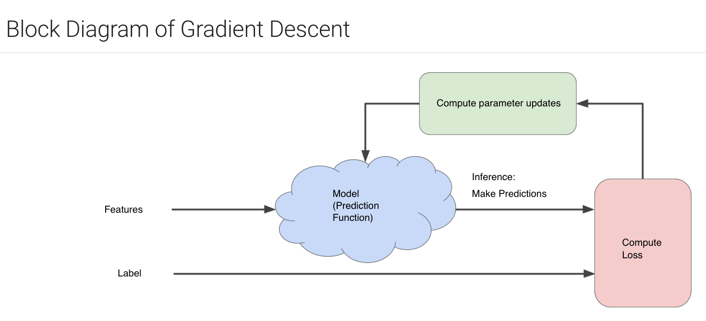

<h1> <a href="https://developers.google.com/machine-learning/crash-course/reducing-loss/an-iterative-approach" target="_blank">
  Reducing Loss: An iterative approach  </a></h1>

<!-- 猜价格 -->
<strong> Reducing Loss: An iterative approach to training a model <a href="https://www.howcast.com/videos/258352-how-to-play-hot-and-cold/" target="_blank"> Hot and Cold </a> 高啦！  </strong>

  
